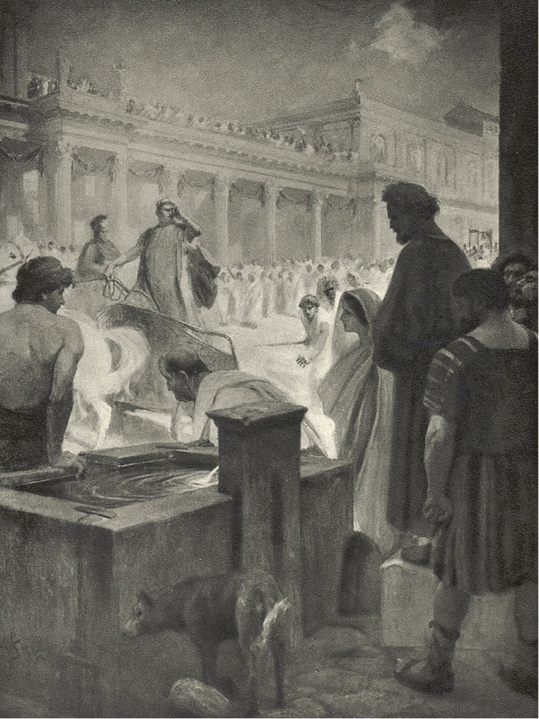

XXXVI
Bylo známo v Římě, že Caesar chce navštíviti na cestě Ostii či vlastně největší koráb na světě, který byl právě přivezl obilí z Alexandrie, tamodtud pak Pobřežní1 cestou že odebere se do Antia. Rozkazy byly již vydány před několika dny, pročež od rána u Porta Ostiensis shromažďovaly se davy, skládající se z místního lidu a všech národů světa, aby nasytily oči pohledem na císařský dvůr, na nějž se římská plebs nikdy nemohla sdostatek vynadívati. Do Antia nebyla cesta obtížná ani daleká, v samém městě pak, skládajícím se z nádherně zařízených paláců a letohrádků, bylo lze nalézti vše, čeho vyžadovalo pohodlí, ano i nejvytříbenější tehdejší přepych. Nicméně míval Caesar ve zvyku bráti s sebou na cestu všeliké předměty, v nichž měl zálibu, počínaje hudebními nástroji a domácím zařízením až po sochy a mosaiky, které byly nakládány dokonce i tehdy, když se chtěl na krátkou jen chvíli zastaviti na cestě, buď aby si odpočinul, nebo se posilnil. Z té příčiny provázely jej při každé vyjížďce celé zástupy služebnictva, nepočítaje oddílů praetoriánských a Augustianů, z nichž každý míval zvláštní družinu otroků.
Za časného rána toho dne pastýři z Campanie, opatřeni kozlími kožemi na nohou a s tvářemi ožehnutými sluncem, vyhnali branou především pět set oslic, aby Poppaea, až přibude nazítří do Antia, mohla míti svoji obvyklou koupel v jejich mléce. Chátra se smíchem a spokojeností dívala se na dlouhé uši ve stádě, kolébající se v oblacích prachu, a s radostí naslouchala práskání bičů, jakož i divokému křiku pastýřů. Když oslice přešly, vrhly se na cestu roje podruhů a pečlivě ji vyčistivše, začali ji zasypávati květy a jehličím pinií. V davech si lidé opakovali s jakýmsi pocitem hrdosti, že prý celá cesta až do Antia je tak vystlána kvítím, které bylo natrháno po soukromých zahradách v okolí, ano i zakoupeno za drahé peníze od překupnic u Porta Mugionis2. Dle toho, jak ubíhaly ranní hodiny, tlačenice rostla každým okamžikem. Někteří přivedli celé rodiny, a aby se jim čas nezdál příliš dlouhý, rozkládali zásoby potravin na kameny, určené pro nový chrám Cereřin3, a pojídali „prandium“ pod širým nebem. Tu a tam utvořily se hloučky, v nichž hlavní slovo měli světaznalí jednotlivci. Hovořilo se za příčinou Caesarova odjezdu o jeho příštích cestách a cestách vůbec, přičemž námořníci a vysloužili vojáci vypravovali divy o zemích, o nichž slyšeli na dalekých výpravách a jichž se dosud nedotkla římská noha. Městští peciválové, kteří nebyli v životě dále nežli na Via Appia, naslouchali s údivem o zázracích v Indii a Arábii, o archipelagech, obklopujících Británii, kde na jednom ostrůvku spoutal Briareus4 spícího Saturna a kde se zdržovali duchové, o krajích hyperborejských5, o ztuhlých mořích, o sykotu a vřavě, jaké vydávaly vody oceánu ve chvíli, kdy zapadající slunce se hroužilo do hlubin. Snadno docházely víry u lidu podobné pověsti, jimž věřili dokonce tací lidé jako Plinius a Tacitus6. Také se mluvilo o onom korábu, který měl Caesar navštíviti, že prý přiváží pšenice na dva roky, nepočítaje čtyři sta cestujících, stejný počet posádky a množství divokých zvířat, jichž mělo býti použito při letních hrách. Zjednávalo to všeobecné náklonnosti k Caesarovi, který nejen lid sytil, nýbrž i bavil. Proto také se připravovali na nadšené uvítání.
Zatím se ukázal oddíl numidských jezdců, patřících k vojskům praetoriánským. Byli oděni ve žlutý šat, měli červené přepásky a veliké náušnice, vrhající zlatý odlesk na jejich černé tváře. Hroty jejich bambusových kopí třpytily se na slunci jako plaménky. Když ti přešli, začal průvod, podobající se procesí. Davy se tísnily, aby se blíže podívaly na pochod, ale přiblížily se oddíly pěších praetoriánů, a rozestavivše se po jedné i druhé straně brány, zamezovaly přístup na cestu. Napřed táhly vozy, odvážející stany z nachu, červené a fialové, a stany z byssu, bílého jako sníh, protkávaného zlatými nitěmi, dále východní koberce a citrové stoly a kusy mosaik a kuchyňské nářadí i klece s ptáky z východu, jihu a západu, jejichž mozky nebo jazyky měly přijíti k Caesarově tabuli, i amfory s vínem i koše s ovocem. Ale předměty, které neměly býti v nebezpečí, že se ohnou nebo potlukou, nesli pěší otroci. A tak bylo viděti celá sta tidí, nesoucích nádoby i sošky z korintské mědi; bylo viděti zvláštní nosiče pro vázy etrurské7, zvláštní pro řecké, zvláštní pro nádoby zlaté, stříbrné nebo zhotovené z alexandrijského skla. Oddělovaly je od sebe malé šiky praetoriánů, pěších i jízdných, nad každým pak hloučkem otroků bděli dozorci, opatření biči, které byly zakončeny kousky olova a železa místo zauzlenými šňůrkami. Průvod, skládající se z lidí, nesoucích pozorně a s úctou rozmanité předměty, vypadal jako nějaké slavnostní náboženské procesí, a ta podoba se stávala ještě patrnější, když došlo na hudební nástroje Caesarovy i jeho dvora. Bylo tam viděti harfy, řecké loutny, hebrejské a egyptské loutny, lyry, formingy8, kytary, píšťalky, dlouhé, zprohýbané buciny9 a cimbály. Kdo se díval na to moře nástrojů, lesknoucích se na slunci zlatem, bronzem, drahými kameny a perletí, mohl by se domnívati, že se vydali na cesty po světě Apollo nebo Bakchus. Potom se objevily nádherné carrucy, plné skákačů, tanečníků, tanečnic, malebně seskupených, s thyrsy v rukou. Za nimi jeli otroci, určení ne k obsluze, nýbrž pro přepych: a to pacholata a malá děvčátka, vybraná z celého Řecka i Malé Asie, dlouhovlasá nebo se splývajícími kadeřemi, jež byly spjaty do zlatých sítěk, podobající se Amorkům, rozkošných tváří, ale vesměs pokrytých silnou vrstvou líčidel, z obavy, aby jejich jemné pleti neošlehal vítr Campanie.
A zase nastupoval praetoriánský oddíl obrovských Sugambrů10 s plnovousy, světlo- i rudovlasých, ale modrookých. Před nimi nesli praporečníci, zvaní imaginarii, římské orly, tabulky s nápisy, sošky bohů germánských i římských a konečně Caesarovy sošky i poprsí. Pod kožemi a pancéři vojáků vyhlížely osmahlé a jako válečné stroje silné paže, které byly s to vládnouti těžkou zbraní, jakou byly vyzbrojeny stráže toho druhu. Půda se prohýbala, jak se zdálo, pod jejich stejnoměrným, těžkým krokem, oni pak, jako by si byli vědomi své síly, které mohli použíti proti samým Caesarům, rozhlíželi se spatra na pouliční láji, zapomínajíce patrně, že mnoho z nich přišlo do tohoto města v okovech. Ale těch byla nečetná hrstka, neboť hlavní praetoriánské síly setrvávaly v táborech na místě, aby bděly nad městem a držely je v kázni. Když přešli, byli vedeni Neronovi tažní tygři a lvi, aby přijde-li mu chuť napodobiti Dionýsa11, bylo co zapřáhnouti do pochodových vozů. Vedli je Indové a Arabové na ocelových řetězích se smyčkou, ale zvířata byla kvítím tak ovinuta, že se zdálo, jako by uvita byla ze samého kvítí. Ochočená zkušenými bestiarii, rozhlížela se po davech svýma zelenýma, jako ospalýma očima, někdy, zvedajíce ohromné hlavy, chrčivě vtahovala do nozder lidské výpary, olizujíce si tlamy drsnými jazyky.
Táhly ještě Caesarovy vozy a lektiky, větší i menší, zlaté nebo purpurové, vykládané sloní kostí, perlami nebo třpytící se leskem drahokamů; za nimi byl opět malý oddíl praetoriánů v římské zbroji; skládal se ze samých italských vojáků dobrovolníků12; pak opět zástupy vybraného služebnictva otrockého a jinochů, a konečně jel sám Caesar, jehož blízkost zdaleka ohlašoval jásot davů.
V tlačenici byl i apoštol Petr, který chtěl jednou v životě spatřiti Caesara. Provázela jej Lygie, majíc tvář zahalenu do hustého závoje, a Ursus, jehož síla znamenala pro dívku nejbezpečnější ochranu mezi nespořádanými a rozpoutanými davy. Lyg vzal do rukou jeden z balvanů, určených ke stavbě chrámů, a přinesl jej apoštolovi, aby vystoupiv si na něj, mohl lépe viděti nežli ostatní. Tísnící se dav začal z počátku reptati, protože Ursus jej rozrážel, jako loď rozráží vlny; jakmile však samojediný vyzdvihl balvan, jímž by ani čtyři nejstatnější siláci z lidu nebyli s to hnouti, repot se změnil v obdiv a volání: Macte!13 ozvalo se kolem. Ale zatím dojel Caesar. Seděl na voze, majícím podobu stanu a taženém šesti bílými idumejskými hřebci, zlatem okovanými. Vůz měl podobu stanu se stranami, jež zúmyslně byly otevřeny, aby davy mohly Caesara viděti. Mohlo se tam vejíti několik osob, ale Nero, chtěje, aby se pozornost soustředila na něm, jel městem sám, maje u nohou pouze dva trpasličí zakrslíky. Byl oděn v bílou tuniku a v ametystovou tógu, která vrhala na jeho obličej namodralý odlesk. Na hlavě měl vavřínový věnec. Od té doby, co odjel z Neapole, značně ztloustl. Tvář měl rozplesklou; pod dolejší čelistí visel mu dvojí podbradek, čímž jeho ústa, vždycky položená příliš blízko nosu, zdála se býti vyříznutá hned pod nozdrami. Tlustý krk si zahalil jako obyčejně do hedvábného šátku, který si přes tu chvíli upravoval bílou a tučnou rukou, porostlou v podpaží ryšavými chlupy, které tvořily takřka krvavé skvrny a jež nedovolil epilatorům vytrhati, protože mu bylo řečeno, že to má za následek třesení prstů a překáží ve hře na loutnu. Bezedná ješitnost ve spojení s únavou a nudou zračila se jako vždy na jeho tváři. Vůbec byla to tvář strašlivá a přitom šaškovitá. Při jízdě točil hlavou na obě strany, chvílemi mhouře oči a pozorně naslouchaje, kterak je vítán. Vítala jej bouře potlesku a jásot: „Vítej, božský Caesare, imperátore, vítej, vítězný! Vítej, nevyrovnatelný, synu Apollonův, Apollone!“ Naslouchaje těm slovům, usmíval se, ale chvílemi přeletovala mu po tváři jakási chmura, neboť římský lid byl jízlivý, a spoléhaje na svůj počet, dovoloval si posměšné uštěpačnosti i vůči velkým triumfátorům, takovým, které opravdu miloval a měl v úctě. Vždyť bylo známo, že kdysi bylo voláno za vjezdu Julia Caesara do Říma: „Občané, schovejte ženy, protože vjíždí plešatý lump!“ Ale hnusná sebeláska Neronova nesnesla sebemenších příhan ani uštěpačností; zatím však v davu mezi pochvalným jásotem ozývalo se volání: „Rudobradý…! Rudobradý…! Kam vezeš svou hořící bradu? Bojíš se, aby Řím od ní nechytil?“ A ti, kdož takto volali, nevěděli, že jejich žert skrývá v sobě hrozné proroctví. Ostatně, Caesara nehněvaly příliš takové hlasy, tím méně, že nenosil plnovousu, poněvadž dávno již obětoval jej ve zlaté krabici Jovišovi Kapitolskému. Jiní však, poschovaní za hromadami kamenů a na nehotových zdech chrámu, křičeli: „Matricida!14 Nero! Orestes! Alcmaeo15!“ Jiní zase: „Kde je Oktávie?“ – „Vrať nach!“ – Na Poppaeu, jedoucí hned za ním, bylo voláno: „Flava coma!16“ – kterýmžto jménem označována nevěstka. Hudební sluch Neronův zachycoval i takové výkřiky, a tehdy zvedal k oku svými prsty vybroušený smaragd, jako by chtěl spatřiti a zapamatovati si ty, kteří je vydávali. Tím způsobem utkvěl zrakem na apoštolovi, stojícím na balvanu. Chvíli dívali se ti dva lidé na sebe, nikoho však ani z toho posvátného průvodu, ani z těch nespočetných davů nenapadlo, že hledí na sebe v této minutě dva vládcové země, z nichž jeden vkrátce zmizí jako krvavý sen, kdežto druhý, onen stařec, oblečený v prostou lacernu, obsáhne věčným panováním svět i město.
Zatím Caesar přejel a hned za ním osm Afričanů přeneslo nádhernou lektiku, ve které seděla Poppaea, lidem nenáviděná. Oděná jako Nero v roucho ametystové barvy, se silnou vrstvou líčidel na tváři, nehybna, zamyšlena a lhostejna, vypadala jako nějaké božství, krásné, ale přitom zlé, které bylo neseno jako na procesí. Kráčel jí v patách celý dvůr mužského i ženského služebnictva, jakož i řady vozů s příslušenstvím pro pohodlí a se šatstvem. Slunce již valně pokročilo z poledne, když začali přejížděti Augustiani – skvělý, zářivý, jako had se měnící a nekonečný průvod. Lenivý Petronius, vlídně vítaný davy, dal se nésti v lektice i se svou bohyni podobnou otrokyní; Tigellinus jel v carruce, tažené malými koníky, zdobenými bílými a purpurovými pery. Byl spatřen, jak vstával na voze, a natahuje krk, rozhlížel se, brzy-li mu Caesar dá znamení, aby si k němu přisedl. Mezi jinými vítaly davy potleskem Liciniana Pisona, smíchem Vitelia, hvízdáním Vatinia. Vůči konsulům Liciniovi a Lecaniovi chovaly se netečně, ale Tullius Senetio, který byl v oblibě, neznámo proč, stejně jako Vestinus, dosáhli potlesku lidu. Dvůr byl nepřehledný. Zdálo se, že všecko, co jest v Římě bohatší a skvělejší nebo znamenitější, stěhuje se do Antia. Nero nikdy necestoval jinak nežli s tisíci vozy, družina pak, jež jej provázela, převyšovala téměř vždycky počet vojáků v legii.17 Diváci si tedy ukazovali na Domitia Afra i na vetchého Lucia Saturnina; bylo viděti Vespasiana, který ještě nebyl vytrhl na svoji výpravu do Judey, ze které se vrátil teprve pro císařskou korunu, i jeho syny i mladého Nervu18 i Lucana i Annaea Gallona i Quintiana a množství žen, známých bohatstvím, krásou, přepychem a prostopášností. Oči chátry se přenášely ze známých tváří na spřežení, vozy, koně, prapodivné kroje služebnictva, skládajícího se ze všech národů světa. V té zátopě nádhery a velikosti nebylo možno věděti, na co se dívat, a nejen oči, nýbrž i mysl byla oslněna těmi zlatými lesky, těmi barvami nachu a fioletu, září drahých kamenů, třpytem byssů, perleti, sloní kosti. Zdálo se, že samy sluneční paprsky v té skvělé koupeli se ztrácejí. A přesto, že mezi chátrou nechyběli chuďasové se vpadlými břichy a hladem v očích, přece jen ta podívaná rozněcovala je nejen touhou po požitcích a závisti, nýbrž naplňovala zároveň rozkoší a pýchou, poskytujíc vědomí oné moci a neužitečnosti Říma, kteréžto obě spojoval Řím v sobě a před nimiž klečel svět. Na celém světě nebylo také nikoho, kdo by se opovážil domnívati se, že ta moc nepřetrvá všech věků, nepřežije všech národů a že cosi může se jí na zemi vzepříti.
Vinitius, jeda na konci průvodu a spatřiv apoštola a Lygii, o které se nenadál, že by ji mohl spatřiti, vyskočil z vozu, a přivítav se s nimi se zářící tváří, začal mluviti zrychleným hlasem jako člověk, jenž nemá času nazbyt:
„Přišla jsi? Nevím, jak ti mám děkovati, ó, Lygie!… Bůh mi nemohl seslati lepší věštby. Pozdravuji tě ještě, louče se, ale neloučím se nadlouho. Cestou rozestavím parthské koně a každý volný den budu u tebe, dokud si nevyprosím návratu. Buď zdráva!“
„Buď zdráv, Marku!“ odvětila Lygie a pak dodala tišeji:
„Provázej tě Kristus a otevři ti duši na slova Pavlova!“
On pak se zaradoval v srdci, že jde jí o to, aby se brzy stal křesťanem, pročež odpověděl:
„Ocelle mi, staniž se, jak pravíš! Pavel chce raději jeti mezi mými lidmi, ale jest u mne a bude mně mistrem i společníkem… Odhrň závoj, radosti má, abych tě ještě spatřil před cestou! Proč ses tak zahalila?“

… utkvěl zrakem na apoštolovi, stojícím na balvanu.
Nadzvedla rukou závoj a ukázala mu svoji jasnou tvář a rozkošné, smějící se oči, tázajíc se: „Není to tak v pořádku?“
A její úsměv měl v sobě trochu dívčí vzdorovitosti, ale Vinitius, hledě na ni s roztoužením, odpověděl:
„Není to dobře pro mé oči, které by se rády dívaly na tebe jedinou do smrti!“
Pak se obrátil k Ursovi a řekl:
„Urse, měj na ni pozor jako na zřítelnici oka, neboť je to nejen tvá, nýbrž i má – domina!“
To praviv, uchopil její ruku a přitiskl na ni ústa k velikému úžasu luzy, která nemohla pochopiti projevu takové cti ze strany vynikajícího Augustiana vůči dívce, oděné do prostého, téměř otrockého roucha.
„Buď zdráva…!“
Pak se rychle vzdálil, poněvadž celý průvod Caesarův byl se dostal značně kupředu. Apoštol Petr žehnal Vinitiovi nevelikým znamením kříže, kdežto Ursus jej začal ihned oslavovati, jsa tomu rád, že mladá velitelka naslouchá žádostivě a dívá se na něho vděčně.
Průvod se vzdaloval a zahaloval v oblaka zlatého prachu, ale oni ještě dlouho se dívali za ním, dokud nepřistoupil k nim Demas mlynář, týž, u něhož v noci pracoval Ursus.
Ten, políbiv apoštolovi ruku, začal ho prositi, aby k němu zašli na posilněnou, řka, že jeho dům jest blízko Emporia, oni pak jistě že mají hlad a jsou unaveni, strávivše většinu dne u brány.
Odešli tedy společně, a odpočinuvše si, posilnivše se v jeho domě, teprve k večeru se vraceli na Zatibří. Majíce v úmyslu přejíti přes řeku po mostě Aemiliově19, kráčeli přes Clivus Publicus, vedoucí středem Aventinského návrší mezi chrámem Dianiným a Merkurovým. Apoštol Petr se rozhlížel po budovách jej obklopujících i vzdálenějších, v dálce se ztrácejících, a pohrouživ se v mlčení, přemýšlel o nesmírnosti a moci tohoto města, do něhož přišel hlásat slovo boží. Dosud vídal římskou vládu a legie v různých zemích, jimiž putoval, ale to byly jaksi jednotlivé články síly, jejíž zosobnění v podobě Caesarově viděl dnes po prvé. To neobsáhlé město, loupeživé a hrabivé a přitom i zhýralé, prohnilé až do morku v kostech a zároveň neochvějné ve své nadlidské síle, ten Caesar, vrah bratra, vrah matky a ženy, za nímž se plížil průvod krvavých přízraků ne menší nežli jeho dvůr; ten prostopášník a šašek, přitom pak pán třiceti legií a tím také celé země; ti dvořané, pokrytí zlatem a šarlatem, nejistí zítřkem a přitom i mocnější nežli králové – to vše dohromady připadalo mu jako pekelné království zla a nepravosti. I podivil se v prostém srdci, jak může Bůh dopřávati takové vševládné moci ďáblovi a jak může svěřovati mu zemi, aby ji drtil, převracel, šlapal po ní, vynucoval krev i slzy, běsnil jako vichřice, zuřil jako bouře, spaloval jako plamen. A od těch myšlenek naplnilo se jeho apoštolské srdce úzkostí i začal mluviti v duchu k Mistrovi: „Pane, co si počnu s tímto městem, do něhož Jsi mne poslal? Jeho jsou moře i pevniny, jeho je zvěř na zemi i vodní tvor, jeho jsou ostatní království i města i třicet legií, které ho chrání, kdežto já, Pane, jsem rybář od jezera! Co si počnu? A kterak přemohu jeho zlobu?“
Takto mluvě, zdvíhal svoji šedivou, třesoucí se hlavu k nebi, modle se a volaje z hloubi srdce ke svému božskému Mistrovi, pln smutku a úzkosti.
Ale vtom byla jeho modlitba přerušena hlasem Lygie, která řekla:
„Město je všecko jako v ohni…!“
Opravdu, slunce zapadalo toho dne nějak podivně. Jeho ohromná koule se již z poloviny skryla za janiculské návrší, kdežto celá prostora nebes naplnila se rudou září. Z místa, na němž stáli, obsáhl jejich zrak značnou dálavu. Poněkud vpravo viděli prodloužené zdi Cirku Maximu, nad ním se kupící paláce Palatina a přímo před sebou za Forum Boarium a Velabrum vrchol Kapitolu s chrámem Jovišovým. Ale zdi, sloupy i vrcholky chrámů jako by se byly hroužily do té zlaté a nachové záře. Ve zdola viditelných částech řeky jako by proudila krev a dle toho, jak slunce zapadalo za návrší stále více, záře čím dále, tím více rudla, čím dále tím podobnější jsouc požárové záplavě, mohutněla, šířila se, až konečně obsáhla sedm pahorků, s nichž stékala, jak se zdálo, do celého okolí.
„Město je všecko jako v ohni!“ opakovala Lygie.
A Petr zastínil si oči rukou a pravil:
„Hněv boží spočívá nad ním.“
Via Litoralis. ↩︎
Dobytčí brána. ↩︎
Bohyně úrody. ↩︎
V řeckém bájesloví storuký obr. ↩︎
Hyperborejci – bájný národ na nejzazším severu. ↩︎
Slavný starořímský dějepisec z přelomu 1. a 2. st. n. l. ↩︎
Etrurie – kraj severně od Říma. ↩︎
Strunný nástroj podobný kytaře. ↩︎
Polnice, roh. ↩︎
Starověký germánský kmen, usídlený kolem dnešního Kolína nad Rýnem. ↩︎
Bůh plodnosti a života v přírodě. Bývá zobrazován na voze taženém lvy nebo tygry. ↩︎
Obyvatelé Itálie byli ještě za Augusta zproštěni vojenské služby, čímž tak zvaná cohors italica, ležící posádkou obyčejně v Asii, skládala se z dobrovolníků. Rovněž tak ve stráži pretoriánské, pokud se neskládala z cizinců, sloužili dobrovolníci. ↩︎
Výborně! Znamenitě! ↩︎
Vrah vlastní matky. ↩︎
V řeckém bájesloví syn argejského krále Amfiaraa; zavraždil vlastní matku a pak zešílel. ↩︎
Rusé vlasy! ↩︎
Za dob císařových čítala legie více nežli 12 000 lidí. ↩︎
Římský konzul, později i císař v 1. st. n. l. ↩︎
Založen r. 179 n. l., vedl přes Tiberu v Římě. ↩︎